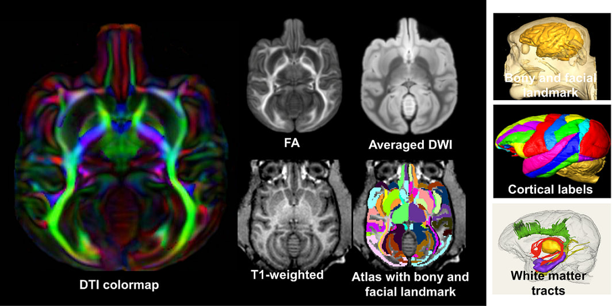

Details of the Data
The atlas package below includes a volume image of atlas labels, averaged high-resolution DTI, single-subject high-resolution DTI and T1 weighted image, all in the template space and with the same dimension and resolution. Atlas labels were delineated based on averaged ex vivo DTI images, which were registered to in vivo T1 weighted images. Bony and facial landmarks from T1 weighted images are available for guiding invasive procedures.
DTI and T1 weighted image dimension: 194x204x164
Resolution: 0.42x0.42x0.42 mm3
DTI was averaged from 10 young adult macaque brains.
Publication
Feng L, Jeon T, Yu Q, Ouyang M, Peng Q, Mishra V, Pletikos M, Sestan N, Miller MI, Mori S, Hsiao S, Liu S, Huang H, 2017. Population-averaged macaque brain atlas with high-resolution ex vivo DTI integrated into in vivo space. Brain Struct Funct. 222(9): 4131-4147.
[Pubmed]
Acknowledgement
The in vivo and ex vivo macaque brain data acquisition and atlas generation were supported by NIH Grants R21 EB009545 and R01MH092535.
Data Download
To download the data, please fill out this google form. Download link will be available after.